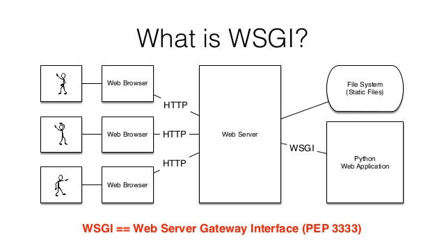

Server-Side (Back-End) Programming Overview
Created for
Iva E. Popova, 2018-2019:

Overview. CGI and modern equivalents.
Overview. CGI and modern equivalents.
CGI Overview
{kind=link}
- CGI - Common Gateway Interface
- A standard protocol for web servers to execute console applications running on a server that generates web pages dynamically.
WSGI
- WSGI - Web Server Gateway Interface
- The Python way of CGI
- mod_wsgi
- Apache HTTP server module. Any Python web application which supports the Python WSGI specification can operate with it.
WSGI
{kind=link}
Build a simple Web App without a Framework
Build a simple Web App without a Framework
Setup
apt-get install apache2 python-setuptools libapache2-mod-wsgi
App folder structure
wsgiApp/
├── app
│ └── get_hobbies.wsgi
├── logs
│ ├── access.log
│ └── error.log
├── public_html
│ └── index.html
Apache vhost conf
Define wsgiapp_path {full path to your wsgiApp/}
<VirtualHost *:80>
ServerName wsgiapp
ServerAlias www.wsgiapp
ServerAdmin username@wsgiapp
DocumentRoot ${wsgiapp_path}/public_html
WSGIScriptAlias /wsgi ${wsgiapp_path}/app
ErrorLog ${wsgiapp_path}/logs/error.log
CustomLog ${wsgiapp_path}/logs/access.log combined
<Directory ${wsgiapp_path}/public_html>
Require all granted
</Directory>
<Directory ${wsgiapp_path}/app>
Require all granted
</Directory>
</VirtualHost>
Enable your site
# enable your site
sudo a2ensite wsgiApp
the front-end:
the back-end
#!/usr/bin/env python
from cgi import parse_qs, escape
html = """
Your data:
Age: %(age)s
Hobbies: %(hobbies)s
"""
def application (environ, start_response):
# Returns a dictionary in which the values are lists
d = parse_qs(environ['QUERY_STRING'])
age = d.get('age', [''])[0]
hobbies = d.get('hobbies', [])
# Always escape user input to avoid script injection
age = escape(age)
hobbies = [escape(hobby) for hobby in hobbies]
response_body = html % {
'checked-software': ('', 'checked')['software' in hobbies],
'checked-tunning': ('', 'checked')['tunning' in hobbies],
'age': age or 'Empty',
'hobbies': ', '.join(hobbies or ['No Hobbies?'])
}
status = '200 OK'
response_headers = [
('Content-Type', 'text/html'),
('Content-Length', str(len(response_body)))
]
start_response(status, response_headers)
return [response_body]
Server-Side Frameworks
Server-Side Frameworks
Why?
- Simplified syntax to for HTTP requests and responses
- Easy to access data in the request
- Route requests to the appropriate handler
- Abstract and simplify database access
- Templating system for rendering data
Popular Server-Side Frameworks
- Python
- Django, Flask, Pyramid
- More reading: Top 10 Python Web Frameworks to Learn in 2018 @hackernoon
- Ruby
- Ruby on Rails
- PHP
- Laravel, Symfony
- Perl
- Dancer, Mojolicious
- JavaScript
- Express (on node.js)
Exercises
Task1
The Task
index.html:- a form to ask the user for her/his age
wsgi/welcome.wsgi:- if the user age >= 18 => return welcome page
- if the user age <= 18 => return deny page ('Sorry, come back after X years')
These slides are based on
customised version of
framework